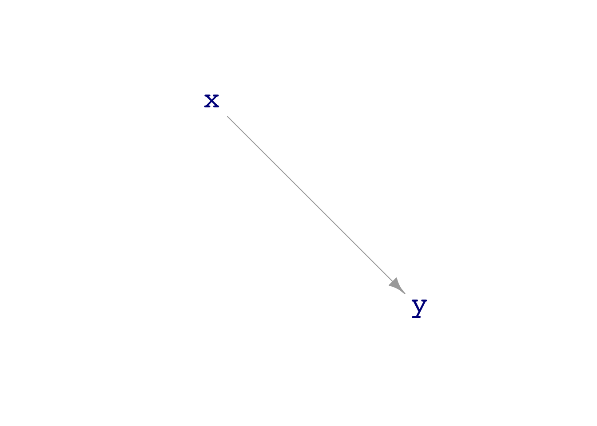
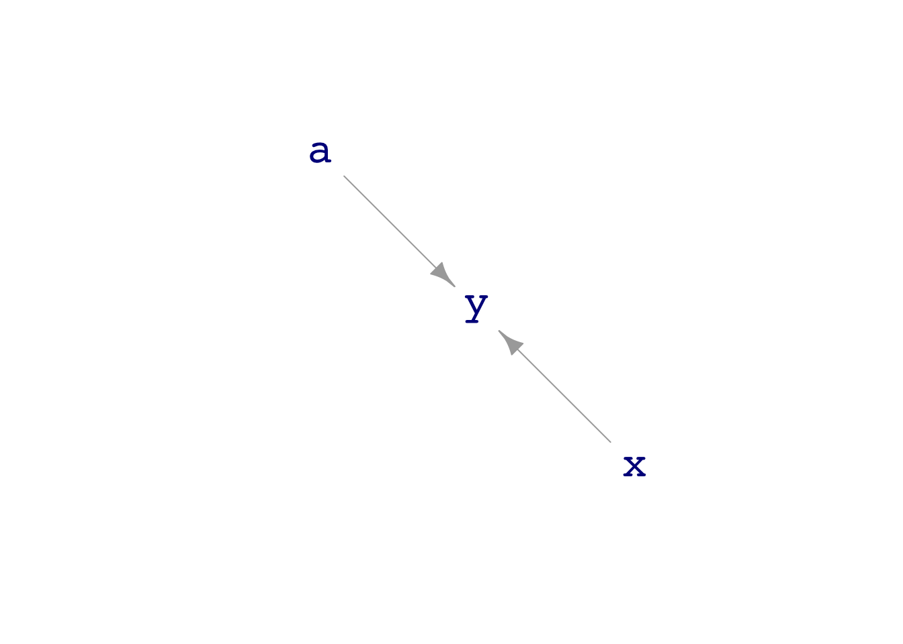

library(mosaic)
library(math300)Math 300 Lesson 21 Notes
Signal and noise
Overview
In accounting for the variation in a response variable y, we conceive of y as being a combination of signal and noise. The signal is defined by a model specification, for instance y ~ x + c. Different model specifications correspond to different definitions of what is signal. The noise is defined as all the variation in y that is not signal.
Reading
Objectives
20.1 Use model training to separate signal from noise in a response variable.
20.2 Recognize that the same training data will show a different signal depending on what model specification is used.
Libraries
Lesson
A regression model separates the response variable into two components: the signal and the noise. Exactly what constitutes the signal is determined by the model specification. In this Lesson, we’ll track variation as it is pushed down the causal links in a DAG and observe how fitting a model to data from the DAG separates signal from noise.
Exercise 1
We start with a simple DAG consisting of two elements, each of which is formed entirely of noise:
ex1_dag <- dag_make(
x ~ exo(1.0) - 2,
y ~ exo(2.5) + 4
)The exo() function generates exogenous noise. The argument to exo() sets the magnitude of the noise
Task 1.1
Draw a picture of ex1_dag to confirm that node x is not causally connected to node y.
# Draw a picture of `ex1_dag`.Generate a sample data from ex1_dag with a few hundred rows and wrangle it to display the variance of x and the variance of y.
# sample(ex1_dag = 500) %>%
# summarize(vx = _______, vy = _______)Based on the calculated variances, say whether the argument to exo() sets the standard deviation or the variance of the exogenous noise.
Your answer:
Even though x and y are not causally connected in ex1_dag, train a model with the specification y ~ x to a sample from ex1_dag and examine the coefficients.
# mod1.1 <- lm(y ~ x, data=sample(ex1_dag, size=500))
# coefficients(mod1.1)Examine the coefficients you just calculated and describe what about them suggests that x and y are not causally connected. (If you’re not sure, increase the sample size by a factor of 10.)
Your answer:
Task 1.2
The code in the next chunk evaluates the model mod1.1 for each row in the training data, producing a data frame. There are three columns we want to look at: .response, .output, .resid. Using wrangling, calculate the variance of each of these columns.
# model_eval(mod1.1) %>%
# summarize(var(.response), var(.output), var(.resid))The .response column is simply the response variable of the training data. It is a combination of signal plus noise. The .output column is an estimate of the signal. The .resid column is an estimate of the noise.
According to the model mod1.1, how much signal is in the response variable?
Your answer:
NOTE: You might wonder why any signal shows up at all, since ex1_dag doesn’t have any connection between x and y. The reason is sampling variation, which produces accidental alignments between x and y even if they are not connected. We will explore sampling variation more thoroughly in Lessons 22 and 23.
Task 1.3
There’s an even simpler model specification that we can try on the data from ex1_dag, the specification y ~ 1. This specification will separate signal from noise assuming that there are no influences on y.
# mod1.3 <- lm(y ~ 1, data=sample(ex1_dag, size=500))
# coefficients(mod1.3)Again, we can evaluate mod1.3 on the training data and observe the magnitudes of the signal and the noise components of y (according to the model specification).
# model_eval(mod1.3) %>%
# summarize(var(.response), var(.output), var(.resid))Explain from the calculated variance how y ~ 1 specifies the division of y into signal plus noise.
Your answer:
Exercise 2
We will turn now to a slightly more complicated DAG: dag01.
dag_draw(dag01)
print(dag01)x ~ exo()
y ~ 1.5 * x + 4 + exo()Pay close attention to the formula for y. It says that y is composed from x plus some exogenous noise, plus 5. (exo() sets its argument to 1.0 by default.)
Task 2.1
Generate a sample of a few hundred rows from dag01 and wrangle it to calculate the variance of y and of x.
# For task 2.1How can you tell from the results that exo() generates exogenous noise with a standard deviation of 1. (OK, so it’s not exactly 1. That’s due to sampling variation, once again!)
Your answer:
Look now at the variance of y and at the formula that generated y, that is, 1.5*x + 4 + exo(). This means that the variance of y is the sum of the variance of 1.5*x (the signal) and the variance of exo() (the noise). The constant 4 does not generate any variability.
The question of the moment is, “What is the variance of 1.5 * x?” You can answer the question by going back to the previous code chunk, and where you had var(x) in the summarize() function, change it to var(1.5 * x)?
There is a pretty simple relationship between var(x) and var(1.5 * x). What is it? (If you can’t see the relationship clearly, go back and change the sample size to be ten or one-hundred times larger.)
Your answer:
Task 2.2
The model specification y ~ x will separate y into signal and noise, putting into the signal only that part of the variation in y that comes from x. NOTE CAREFULLY that in a model specification, you do not put in numbers such as 1.5. Training the model to the specification will find such numbers for you; those are the coefficients. The right-hand side of the specification simply contains the names of the explanatory variables you want to include in the signal.
Use a sample of a few hundred rows from dag01 to train a model, call it mod2.2 to the specification y ~ x.
mod2.2 <- lm(y ~ x, data=sample(dag01, size=500))Look at the coefficients and say whether they are appropriate, given the dag01 formula for y.
Your answer:
Evaluate mod2.2 on the training data and calculate the variances of the .response, .output and .resid columns.
model_eval(mod2.2) %>%
summarize(var(.response), var(.output), var(.resid))Using training data as input. var(.response) var(.output) var(.resid)
1 3.156326 2.080678 1.075648How much variance did the specification y ~ x assign to the signal and how much to the noise?
Task 2.3
Repeat Task 2.2 but for the model specification y ~ 1. This specification insists that y does not have any influence from x. Determine how big the signal is and how big the noise is.
# mod2.3 <- lm(y ~ 1, data=sample(dag01, size=500))
# model_eval(mod2.3) %>%
# summarize(var(.response), var(.output), var(.resid))What happens when the specification conflicts with the actual mechanism? Who wins?
Your answer:
Exercise 3
Now we will work with a different DAG, dag02, where y is influence by two variables, x and a.
dag_draw(dag02)
print(dag02)x ~ exo()
a ~ exo()
y ~ 3 * x - 1.5 * a + 5 + exo()Task 3.1
- How much variance is contributed to
yby the3 * xterm in the DAG formula?
Your answer:
- How much variance is contributed to
yby the-1.5*aterm in the DAG formula?
Your answer:
Task 3.2
Consider these four model specifications, each of which divides y into signal and noise in its own way:
y ~ 1y ~ xy ~ ay ~ x + a
- Which model specification, (ii) or (iii), extracts a signal with a bigger variance?
Your answer:
- Which model specification extracts a signal with the biggest variance of all?
Your answer: